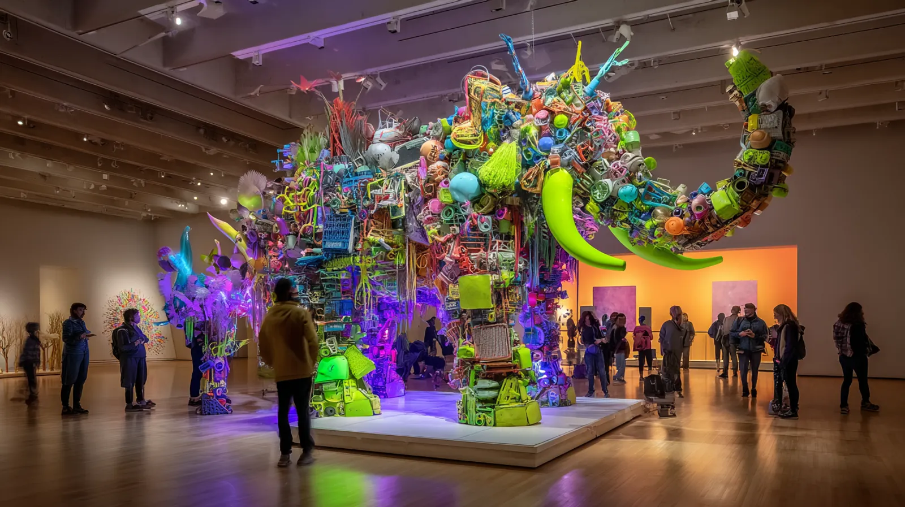
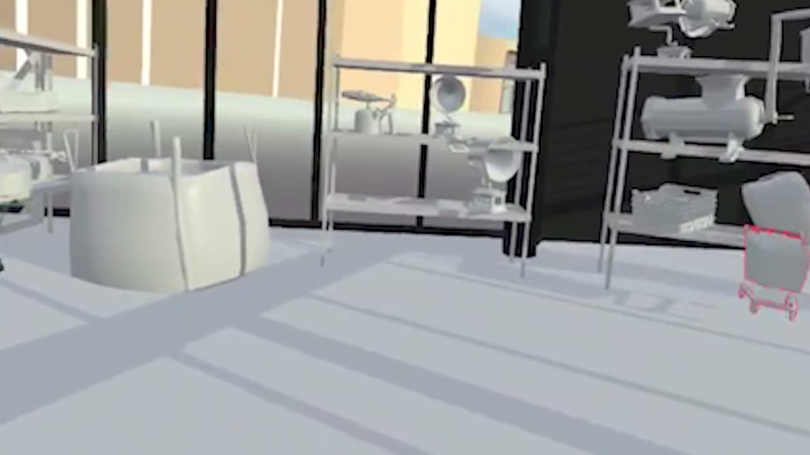
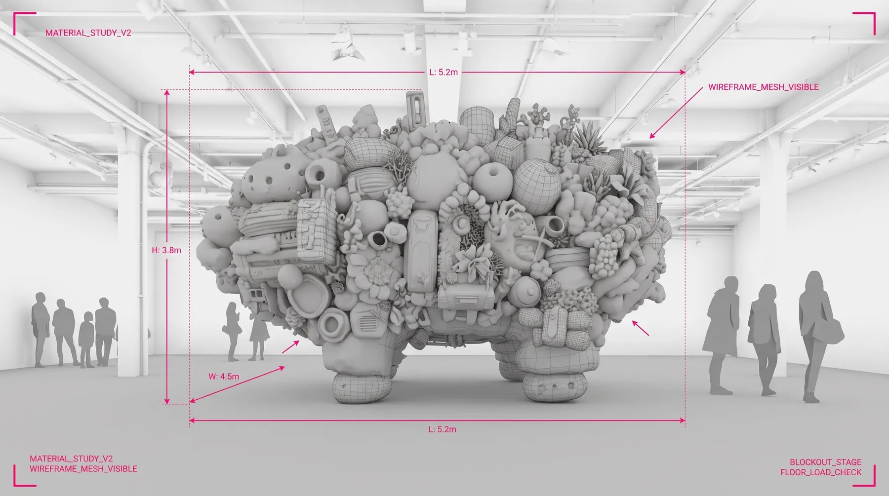
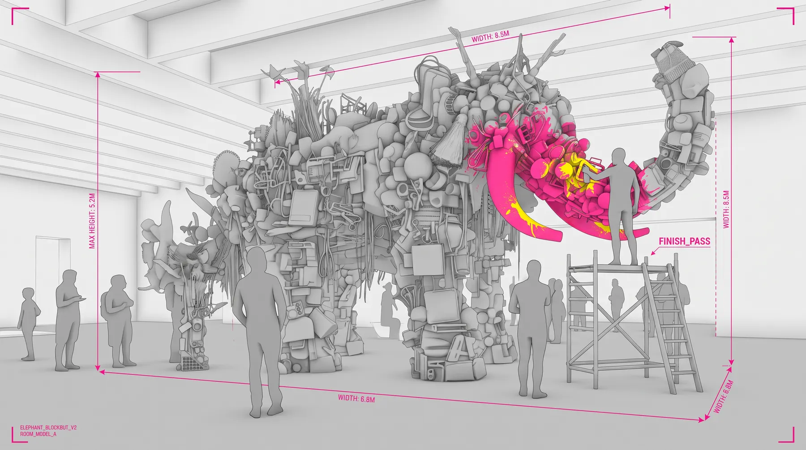
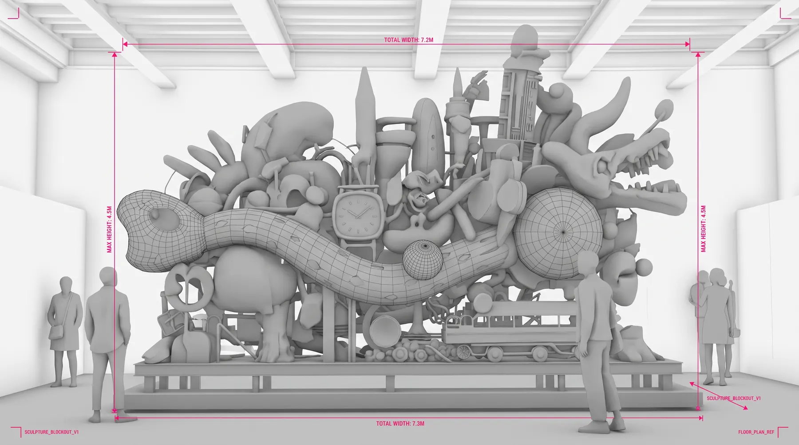
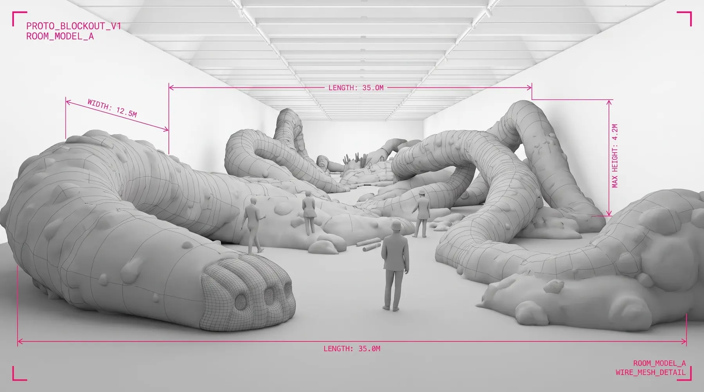

1
02
03
04

05
01
02
03
04
Luis Alberto Spinetta · Cantata de puentes amarillos
Leonard Cohen · Anthem, 1992
06
08
10
- 01
- 02
- 03
- 04
- 05
- 06
- 07
- 08
- 09
- 10
11
Pedro
12
20
3
3
4

-
Pedro
-
Amira
-
Julien
-
Sofía
-
Bo
13
10–15
1:1
0
20–30
14

15
16
01
02
03
17
18
19
20

21
22
23
24

25
Montreal
Barcelona
26
→
→
→
→
→
27

28
29
30